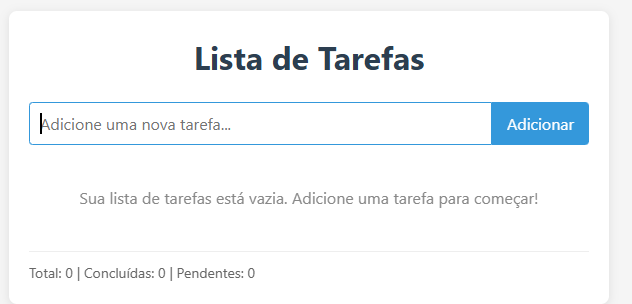
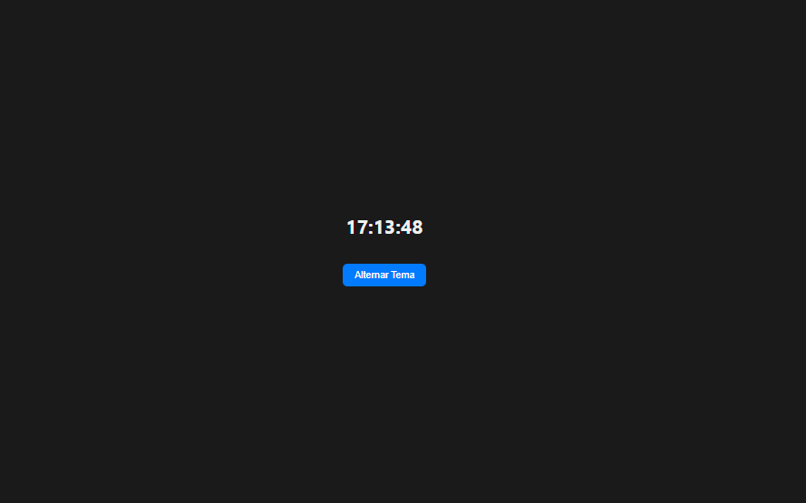

Meus Projetos
Projeto didatico Leonardo da Vinci
Desenvolvimento de um site para fins educacionais em conjunto com a professora da disciplina de Fundamentos de densenvolvimento web, para desenvolver a materia de HTMS e CSS.Tecnologias: HTML, CSS.
Aplicativo de Lista de Tarefas
Criação de um aplicativo web simples para gerenciamento de lista de tarefas, com recursos de adicionar, editar e excluir tarefas. Desenvolvido com foco na usabilidade e na experiência do usuário. Tecnologias: HTML, CSS e JavaScript.
Relógio Digital com Dark/Light Mode
Um projeto 100% em HTML, CSS e JavaScript, que mostra as horas em tempo real e permite alternar entre tema escuro e claro.